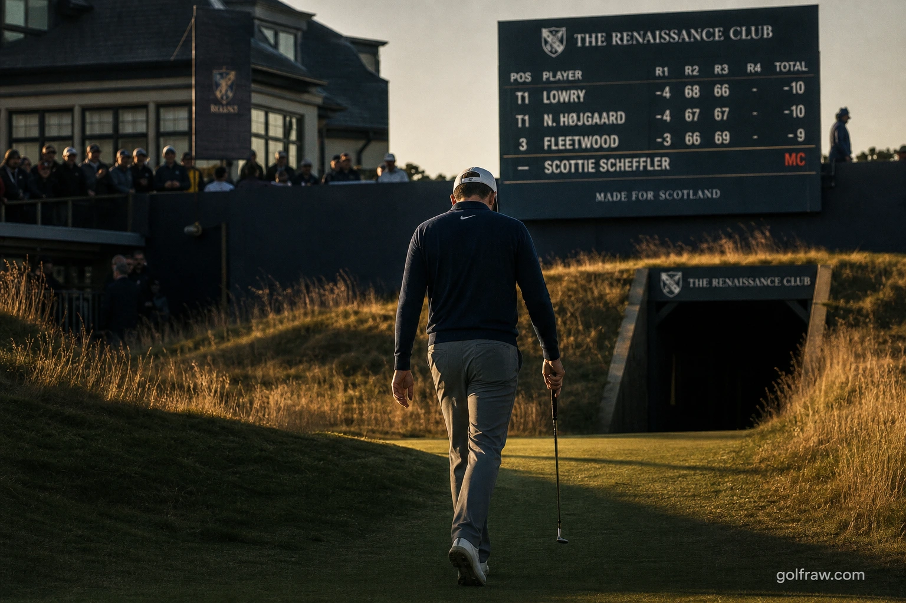

Quick Summary: World No. 1 Scottie Scheffler missed the cut at the 2026 Genesis Scottish Open, firing rounds of 68 and 72 to finish at even par—two strokes outside the cut line. The early exit snaps his historic streak of 78 consecutive made cuts dating back to August 2022, the fifth-longest streak in PGA Tour history. As Scheffler mutters into a hot mic and heads to Royal Birkdale for his Open Championship defense, we analyze a rare, human glitch in golf's most dominant machine.

The Sputtering of the Machine: Scheffler's Friday Stumble
Even the most advanced golfing machine is subject to structural failure. At the Genesis Scottish Open, the golf world witnessed a glitch in the grid that was both jarring and strangely human. Scottie Scheffler, who has steamrolled professional golf with relentless, robotic consistency, missed a 36-hole cut for the first time in nearly four years. He finished his two rounds at even-par overall, failing to reach the 2-under cut line in North Berwick.
Thursday's opening round of 68 was quiet but solid, placing Scheffler three shots off the pace and suggesting his usual smooth path to the weekend. But Friday was a different story. He stumbled out of the gate with bogeys on his first two holes, added another dropped shot at the par-3 17th, and carded a solitary birdie on his back nine. The resulting 2-over 72 left him tied for 91st, nine strokes off the lead, and headed home early.
The Historical Context: Snapping a Four-Year, 78-Cut Streak
The scale of Scheffler's consistency becomes clear only when it is broken. Since his last missed cut at the 2022 FedEx St. Jude Championship in August of that year, Scheffler played the weekend in 78 consecutive tournaments. That streak was 51 events longer than the next best active streak on tour—a gap that wasn't a lead, but a different postcode. By failing to play the weekend, Scheffler's streak ends as the fifth-longest in PGA Tour history:
- Tiger Woods: 142 straight made cuts (1998–2005)
- Byron Nelson: 113 straight made cuts (1940s)
- Jack Nicklaus: 105 straight made cuts (1970–1976)
- Hale Irwin: 86 straight made cuts (1975–1979)
- Scottie Scheffler: 78 straight made cuts (2022–2026)
The missed cut also terminated his run of 35 straight top-25 finishes, just three short of Tiger Woods' modern record. With Scheffler sidelined, Matt Fitzpatrick now inherits the longest active made-cut streak on the PGA Tour at a modest 28, illustrating just how far ahead of the field the world No. 1 had traveled.
A Hard Lesson in Links Variance
Scheffler's level-par week was driven by uncharacteristically ordinary ball-striking metrics. He leads the PGA Tour in almost every significant tee-to-green category, but at The Renaissance Club, his iron play sputtered. He hit only 11 of 26 fairways and found 23 of 36 greens, losing nearly two strokes to the field on approach play—normally the most dominant weapon in his arsenal.
Scheffler offered no excuses, admitting his start was sloppy and his approaches lacked proximity. He also floated a more fundamental truth: the course simply does not suit his eye. This is his fifth appearance at the Scottish Open, and he has frequently expressed frustration with Tom Doak's modern links layout. Links grass, heavy crosswinds, jet lag, and severe greens make links golf a high-variance exercise. When approach play isn't laser-precise, even the best player in the world is at the mercy of the elements.
"I'm so bad, just awful."
A Blip, Not a Decline: Evaluating Scheffler's 2026 Campaign
Before panic spreads through golf media, it is critical to contextualize this result. A single missed cut is a statistical outlier, not a sign of competitive decay. Scheffler remains the undisputed world No. 1 and leads the tour in scoring average. His struggle in 2026 hasn't been performance decline, but rather a lack of trophies to match his elite play.
Aside from his lone victory at the American Express in January, Scheffler has recorded four runner-up finishes, including a playoff loss to Fitzpatrick at the RBC Heritage and a gutting playoff defeat to Viktor Hovland at the Travelers Championship. He has played spectacular, dominant golf all year; he has simply been beatable on Sundays. His worst finish prior to this week was a T24 in March, which underscores how high his floor has been.
Birkdale Implications: The Defending Open Champion's Prep
The early exit alters Scheffler's preparation as he heads to Royal Birkdale to defend his Open Championship title. Arriving at a major championship venue coming off a missed cut is rarely the preferred flight path for a defending champion, especially on a course he has never played competitively.
However, there is a clear silver lining: Scheffler now has extra days to scout Birkdale and adjust to links conditions. He has rebounded from scratchy Scottish Opens to contend or win at the Open Championship before, notably in 2023 and 2025. Despite the setback, bookmakers still install him as the clear +500 betting favorite to lift the Claret Jug next Sunday, ahead of Rory McIlroy. Writing off the world No. 1 after one bad Friday is a bettor's fastest path to ruin.
The Raw Read
Strip away the shock value, and Scheffler's missed cut is a reminder of why we watch the game. His relentless consistency has made him look robotic, but the hot-mic mutterings on the 18th green proved he feels the same frustration as any weekend golfer. The best player alive stood on a tee in North Berwick and got humbled by the wind.
The analytical read is that this missed cut means very little for his long-term prospects, even if it stings. You do not forget how to swing in 36 holes on a course you dislike. If Scheffler adjusts, learns Birkdale's contours, and wins next week, this missed cut becomes a trivia answer. If he stumbles there too, we can talk. For now, it's just the end of a legendary streak, and even Scottie Scheffler was due a Friday off.
Frequently Asked Questions
Did Scottie Scheffler miss the cut at the 2026 Scottish Open?
Yes. He finished 36 holes at even par after rounds of 68 and 72, two shots outside the 2-under cut line, in a tie for 91st.
When was Scheffler's last missed cut before this?
The 2022 FedEx St. Jude Championship in August 2022, ending a streak of 78 consecutive made cuts spanning nearly four years.
How long was Scheffler's made-cut streak?
78 tournaments, the fifth-longest in PGA Tour history behind Tiger Woods, Byron Nelson, Jack Nicklaus and Hale Irwin.
Why did Scheffler miss the cut?
A poor Friday start, only one back-nine birdie, and below-average approach play. He hit just 11 of 26 fairways and lost nearly two strokes on approach, and suggested the course may not suit his game.
Does this mean Scheffler is struggling?
Not really. He still leads the tour in ball-striking and scoring and has four runner-ups this year. This was his first genuinely poor week of 2026, an outlier rather than a decline.
What does it mean for the Open Championship?
Scheffler defends his title at Royal Birkdale, a course he has never played. The early exit gives him extra prep days, and he remains the betting favourite despite the missed cut.